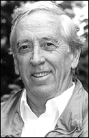
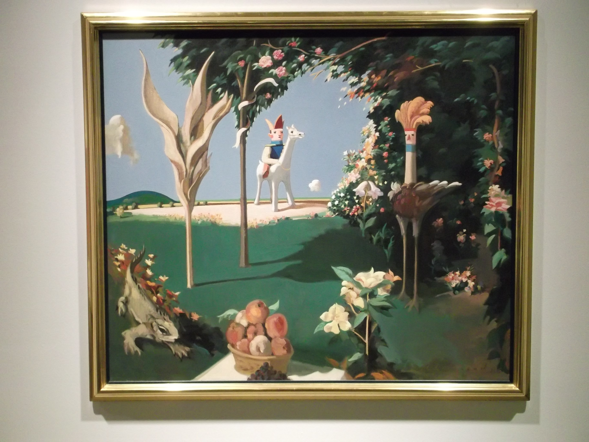
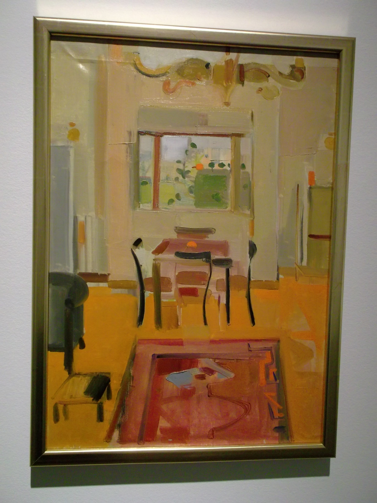

Kenneth Lochhead

Kenneth Lochhead, 1986 - Title: Emergence - Style: Oil on paper
Kenneth Lochhead, 1991 - Title: Ladies in Waiting - Style: Oil on paper

Kenneth Lochhead, 1956 to 1960 - Title: Villina Dining - Style: Oil on paper
